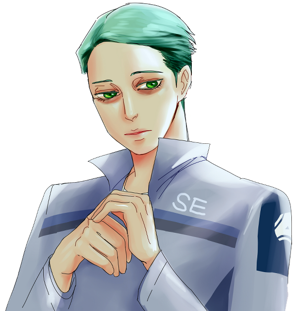

"지금 우리가 해야할 일은..."
▲펼치기
이름
닉스 ‘99’ 나노폴러스 (Nyx ‘Ninety-nine’ Nanopoulos)
나이
41세
성격
건축가형 인물. 상상력이 풍부한 동시에 모든 일을 정확하게 계획하여 진행한다.
신중하며 용의주도함. 다소 내향적이나 사람들과 어울리는 것을 어려워하지는 않는다.
기타
짙은 다크서클이 내려와 항상 피곤해 보이는 인상이다.
부서
기술팀
선관
x
오너
솜전화